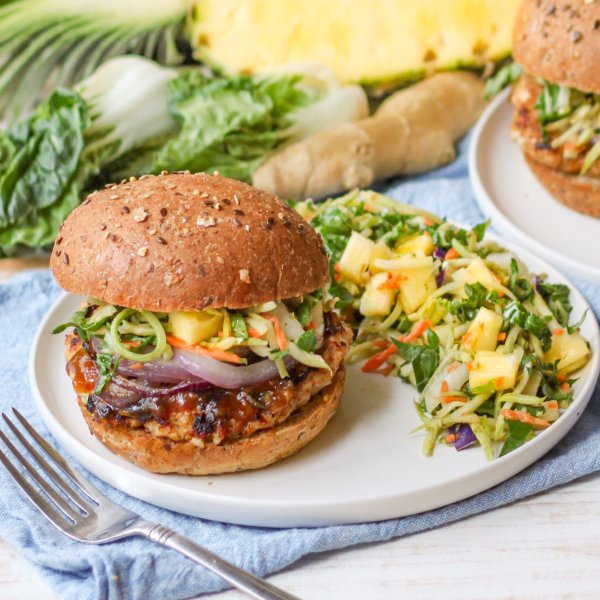

Teriyaki Turkey Burger with Grilled Onions & Pineapple-Broccoli Slaw

Prep Time
35 min
Nutrition (per serving)
679.7 kcalCalories
49.7 gProtein
60.9 gCarbs
28.9 gFat
Full nutrition table
| Calories | 679.7 kcal |
| Total fat | 28.9 g |
| Saturated fat | 5.9 g |
| Trans fat | 0.6 g |
| Cholesterol | 117.4 mg |
| Sodium | 515.5 mg |
| Carbohydrates | 60.9 g |
| Fiber | 9.4 g |
| Sugars | 24.5 g |
| Protein | 49.7 g |
| Potassium | 1606.5 mg |
| Calcium | 354.9 mg |
| Iron | 6.4 mg |
| Vitamin A | 546.1 IU |
| Vitamin C | 214.5 mg |
| Vitamin D | 23.8 IU |
Cookware
Ingredients
- 6baby bok choy
- 1 (12 oz) pkgbroccoli slaw
- 8 fl ozchicken or vegetable broth
- 4 clovesgarlic
- 2 (1 inch) piecesginger root
- 1 ½ lbground turkey
- 1 smallpineapple
- 1 mediumred onion
- 4whole grain buns or rolls
- black pepper
- brown sugar
- chili-garlic sauce
- cornstarch
- panko bread crumbs
- rice vinegar
- salt
- soy sauce
- toasted sesame oil
Steps
- Wash and dry the fresh produce.2 (1 inch) pieces ginger root
1 small pineapple
6 baby bok choy - Peel and mince ginger and garlic; place both in a small saucepan.4 cloves garlic
- Add broth, soy sauce, vinegar, sugar, and chili-garlic sauce to the saucepan with the ginger and garlic; whisk to combine. Place over high heat and bring to a boil.8 fl oz (1 cup) chicken or vegetable broth
¼ cup soy sauce
4 tsp rice vinegar
2 tsp brown sugar
1 tsp chili-garlic sauce - Meanwhile, in a small bowl, make a slurry by whisking water with cornstarch until smooth. Once the liquid in the saucepan comes to a boil, add slurry in a steady stream while whisking quickly. Let boil for 1 minute, then remove teriyaki sauce from heat and set aside.¼ cup water
2 tbsp cornstarch - Preheat a grill pan, outdoor grill, or regular skillet over medium-high heat.
- While the pan heats up, peel and slice onion crosswise into thin rings. Transfer to a plate, drizzle with oil, and season with salt on both sides.1 medium red onion
1 tsp toasted sesame oil
¼ tsp salt - Once the pan is hot, add the onions and grill, flipping once, until tender and lightly charred, 3-4 minutes. Return onions to the plate and loosely cover with aluminum foil. (Reserve pan for the burger patties.)
- Meanwhile, place turkey, bread crumbs, salt, pepper, and half of the teriyaki sauce in a medium bowl; mix with your hands until well combined. Form the turkey mixture into 4 equal-sized patties and place on another plate. (Reserve remaining teriyaki sauce for serving.)1 ½ lb ground turkey
½ cup panko bread crumbs
1 tsp salt
½ tsp black pepper - When the onions are done, return the pan to medium-high heat and coat with oil. Add burger patties and cook, undisturbed, for 5 minutes; flip patties, and cook an additional 5-6 minutes, until cooked through. Add to the plate with the onions and re-cover with foil.4 tsp toasted sesame oil
- While the patties are cooking, place additional oil, soy sauce, vinegar, sugar, and chili-garlic sauce in a clean medium bowl; whisk to combine the dressing.2 tbsp toasted sesame oil
4 tsp soy sauce
2 tsp rice vinegar
1 tsp brown sugar
1 tsp chili-garlic sauce - Cut off skin from pineapple; quarter, core, and medium dice. Add to the bowl with the dressing.
- Trim and thinly slice bok choy crosswise into shred-like strips; add to the bowl, along with the broccoli slaw, and toss to combine.1 (12 oz) pkg broccoli slaw
- Toast buns if desired.4 whole grain buns or rolls
- Place bottom half of each bun on a plate; layer with burger patties, remaining teriyaki sauce, onions, and a small portion of the slaw. Close with the top half of each bun and serve with remaining slaw on the side. Enjoy!